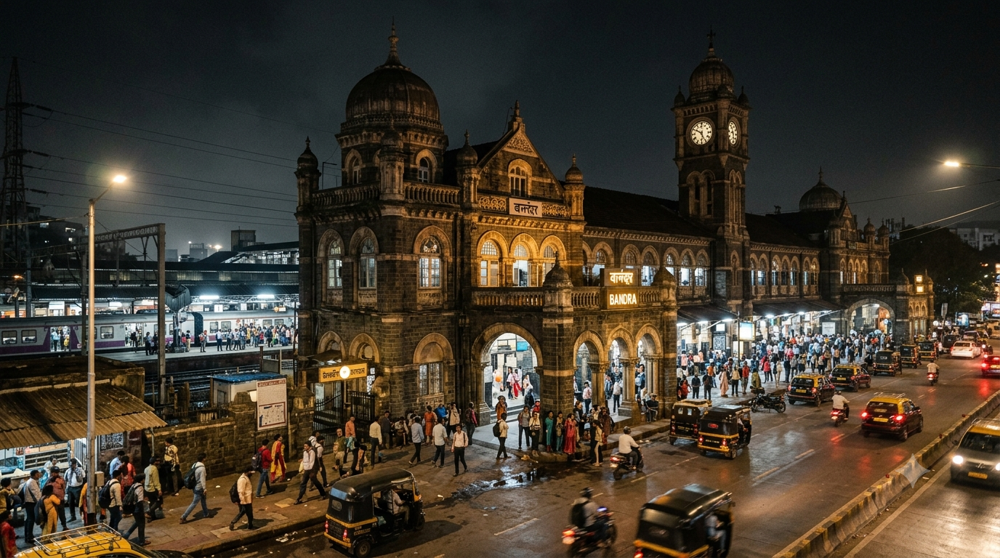
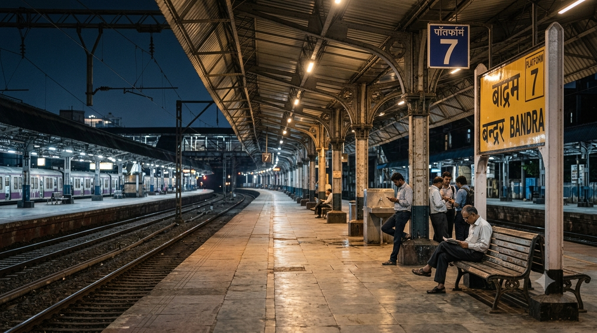
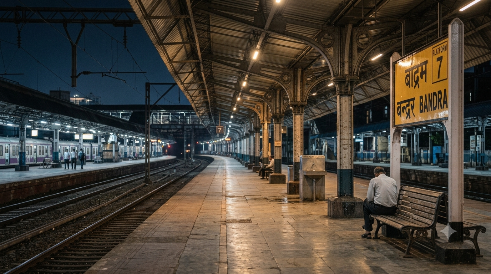
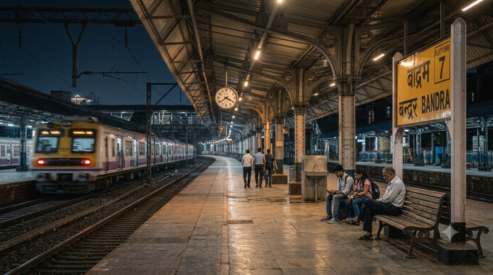

अध्याय 1: प्लेटफ़ॉर्म 7: जहाँ सफ़र खत्म नहीं होता, सवाल शुरू होते हैं
«“मुंबई जैसे शहर में हर प्लेटफ़ॉर्म किसी न किसी कहानी का गवाह होता है... लेकिन कुछ प्लेटफ़ॉर्म लोगों के मन में सिर्फ़ अपनी ट्रेन की वजह से नहीं, बल्कि अपने सवालों की वजह से रह जाते हैं।”»रात का समय है। मुंबई की रफ़्तार अभी भी पूरी तरह रुकी नहीं है। रेल की पटरियों पर आती-जाती ट्रेनों की आवाज़... घोषणाओं की गूँज... लोगों के कदमों की आवाज़... और उनके बीच कुछ पल ऐसे भी आते हैं जब भीड़ के बावजूद कोई जगह अचानक असामान्य रूप से शांत महसूस होने लगती है। इसी शहर में है— Bandra Railway Station. एक ऐसा स्टेशन जिसकी कहानी आज की मुंबई से कहीं पुरानी है। लेकिन इस कहानी का हमारा अगला पड़ाव है— Platform 7. --- एक नंबर... और उससे जुड़ी एक जिज्ञासा किसी रेलवे प्लेटफ़ॉर्म का नंबर अपने आप में रहस्यमय नहीं होता। 1, 2, 3, 4... और फिर— 7. लेकिन जब किसी जगह के बारे में लोगों के बीच अलग-अलग बातें फैलने लगें, जब इंटरनेट पर उसकी कहानियाँ घूमने लगें, और जब किसी सामान्य स्थान को लोग एक अलग नज़र से देखने लगें... तब सवाल सिर्फ़ यह नहीं रहता कि— “यहाँ हुआ क्या था?” सवाल यह भी बन जाता है— “आख़िर लोगों ने इस जगह को रहस्यमय समझना शुरू क्यों किया?” यही हमारा पहला सवाल है। --- सात प्लेटफ़ॉर्म वाला एक ऐतिहासिक स्टेशन आज Bandra Mumbai Suburban Railway Network का एक महत्वपूर्ण स्टेशन है और Western तथा Harbour lines से जुड़ा हुआ है। Heritage documentation में Bandra Railway Station को एक Grade-I heritage property के रूप में दर्ज किया गया है। इसके वर्तमान ऐतिहासिक station building का निर्माण 1888 से जोड़ा जाता है। लेकिन Bandra की railway कहानी इससे भी पहले शुरू हो चुकी थी। 19वीं शताब्दी में Bandra, जिसे उस समय Bandora कहा जाता था, railway network का हिस्सा बन चुका था। उपलब्ध railway-history records के अनुसार 1867 में शुरू हुई शुरुआती regular suburban rail service भी Bandora पर रुकती थी। यानी जिस जगह को आज हम मुंबई की भागती हुई जिंदगी के हिस्से के रूप में देखते हैं... वह जगह एक सदी से भी अधिक समय से यात्रियों को आते-जाते देख रही है। चेहरे बदल गए। कपड़े बदल गए। ट्रेनें बदल गईं। मुंबई बदल गई। लेकिन— रेलवे प्लेटफ़ॉर्म वहीं रहे। --- और फिर आता है Platform 7 आज स्टेशन पर सात platforms हैं। Heritage documentation में station building से सातों platforms तक जाने वाले overbridges का भी उल्लेख मिलता है। लेकिन Platform 7 की कहानी को समझने के लिए सिर्फ़ उसके नंबर को देखना काफी नहीं है। हमें उस वातावरण को समझना होगा जिसमें यह platform मौजूद है। एक तरफ़ लाखों लोगों की रोज़मर्रा की यात्रा। दूसरी तरफ़ पुरानी railway architecture की छाप। ऊपर से लगातार आती-जाती ट्रेनें। घोषणाओं की आवाज़। भागते हुए यात्री। और इन सबके बीच— कुछ ऐसे क्षण जब कोई व्यक्ति अकेला खड़ा होकर सिर्फ़ इंतज़ार कर रहा होता है। यही वह environment है जहाँ imagination बहुत आसानी से काम करने लगती है। --- लेकिन रहस्य आया कहाँ से? यहीं हमारी कहानी सबसे महत्वपूर्ण हो जाती है। Internet पर Platform 7 और Bandra station से जुड़ी कई तरह की बातें दिखाई देती हैं। कुछ लोग unusual experiences की बात करते हैं। कुछ लोग किसी घटना को रहस्यमय मानते हैं। कुछ stories आगे बढ़ते-बढ़ते paranormal claims का रूप ले लेती हैं। लेकिन documentary के लिए हमें यहाँ एक सीमा खींचनी होगी। किसी व्यक्ति का अनुभव एक अनुभव है। वह अपने आप में scientific proof नहीं बन जाता। और internet पर मौजूद कोई कहानी अपने आप historical fact नहीं बन जाती। इसलिए इस documentary में हम हर बात को एक ही category में नहीं रखेंगे। हम पूछेंगे— क्या documented है? क्या reported है? क्या सिर्फ़ folklore है? और— क्या केवल internet पर दोहराई गई कहानी है? --- Platform 7 की असली कहानी शायद यहीं से शुरू होती है क्योंकि mystery हमेशा किसी भूत से शुरू नहीं होती। कभी-कभी mystery शुरू होती है— एक पुराने स्थान से। एक घटना से। एक अफ़वाह से। किसी व्यक्ति के अनुभव से। और फिर धीरे-धीरे लोग उस कहानी को अपने तरीके से आगे बताते जाते हैं। एक व्यक्ति कहता है— “मैंने वहाँ कुछ अजीब महसूस किया।” दूसरा कहता है— “मैंने भी ऐसी ही बात सुनी है।” तीसरा उसे internet पर लिख देता है। और चौथा व्यक्ति जब वहाँ पहुँचता है... तो वह पहले से उस कहानी को अपने दिमाग में लेकर पहुँच चुका होता है। अब सवाल यह है— क्या उसने वास्तव में कुछ असामान्य देखा? या उसके दिमाग ने पहले से सुनी हुई कहानी के आधार पर उस अनुभव को समझा? यहीं से हमारी कहानी केवल एक railway platform की कहानी नहीं रहती। यह बदल जाती है— मानव विश्वास, डर और perception की कहानी में। --- एक जरूरी बात Platform 7 को “भूतिया जगह” कह देना आसान है। लेकिन एक documentary बनाना सिर्फ़ आसान कहानी सुनाना नहीं है। हम यह नहीं कहेंगे कि यहाँ कोई supernatural entity निश्चित रूप से मौजूद है। हम यह भी नहीं कहेंगे कि हर कहानी झूठी है। हम केवल इतना करेंगे— जो प्रमाणित है, उसे प्रमाणित कहेंगे। जो reported है, उसे reported कहेंगे। और जो folklore है, उसे folklore कहेंगे। क्योंकि कभी-कभी किसी रहस्य को समझने का सबसे ईमानदार तरीका यही होता है कि हम तुरंत उसका जवाब देने की कोशिश न करें। बल्कि पहले उसके सारे सवाल सुनें। --- अगली कहानी कहाँ से शुरू होगी? अगले अध्याय में हम Platform 7 से भी पीछे जाएँगे। उस समय में... जब Mumbai आज की Mumbai नहीं थी। जब Bandra की पहचान modern suburb के रूप में नहीं बनी थी। जब railway lines शहर को आज की तरह नहीं काटती थीं। और जब Bandora Railway Station एक नए railway युग का हिस्सा बन रहा था। क्योंकि अगर हमें Platform 7 की कहानी समझनी है... तो हमें पहले यह समझना होगा कि— Bandra Railway Station बना कैसे? और लगभग डेढ़ सदी से भी अधिक समय में इस जगह ने आखिर-क्या-क्या देखा है? अगले अध्याय में— “Bandra Station — एक प्लेटफ़ॉर्म से कहीं पुरानी कहानी”

1p.png
2p.png
3p.png
4p.png
💬 पाठकों की टिप्पणियाँ (Comments)